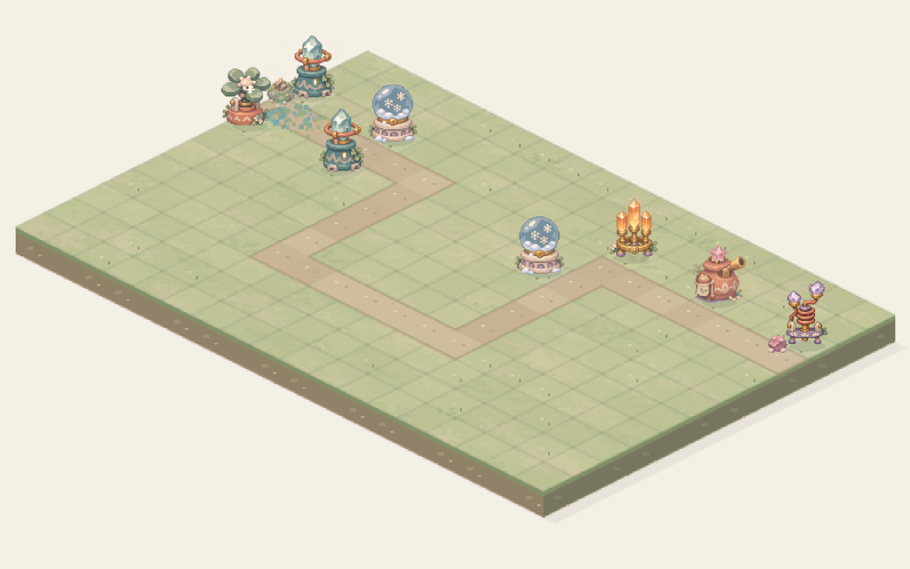
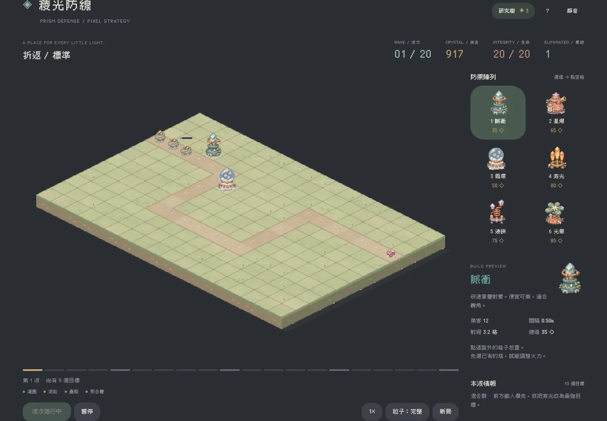
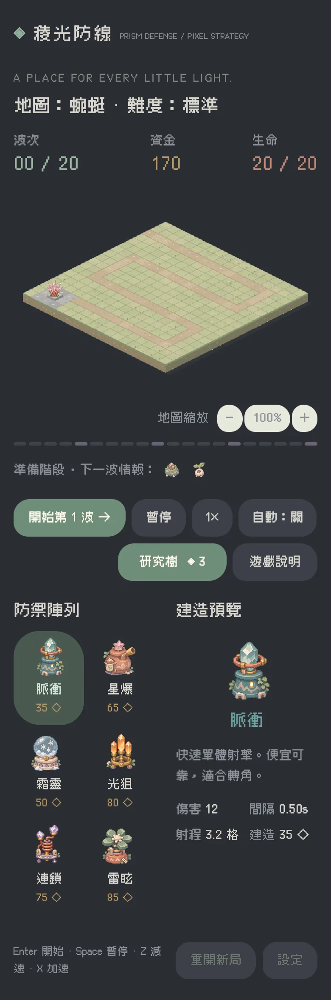

yore.tw
yore.tw
Prism Defense 稜光防線
幻彩像素塔防。配置六種防禦塔，探索三條研究路線，守住二十波幾何洪流。
A pixel tower defence in prismatic colours. Place six kinds of tower, follow three research paths, and hold out against twenty waves.

開始遊戲Play怎麼玩
How it plays
先建造，再開波。選一座塔，點道路外的空格放下去。點已建好的塔可以升級、改目標或出售。每波之間沒有倒數，可以慢慢想，戰鬥中也能建造。每五波有一隻首領。
Build first, then start the wave. Pick a tower and place it on any tile off the road. Tap a built tower to upgrade it, change its target or sell it. There is no countdown between waves, and you can keep building during one. A boss comes every five waves.
六種塔：脈衝、星爆、霜環、穿光、連鎖、光暈。三張地圖，三種難度。
Six towers: Pulse, Starburst, Frost Ring, Beam, Chain and Bloom. Three maps and three difficulty levels.
研究樹
Research tree
突破波數紀錄會獲得晶核，用來在研究樹升級火力、控制、經濟三條路線，共十五項。研究永久保留，跨場有效，準備階段可以免費重置。
Beating your wave record earns cores. Spend them in the research tree on three branches, firepower, control and economy, fifteen items in all. Research is permanent across runs and can be reset for free while planning.
遊戲畫面
Screenshots




素材與授權
Credits
文字使用 Cubic 11 像素字型（SIL Open Font License）。
Text is set in the Cubic 11 pixel font (SIL Open Font License).